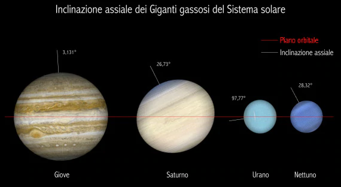

URANO
Urano e' il settimo pianeta del Sistema solare in ordine di distanza dal Sole, il terzo per diametro e il quarto per massa.
Sebbene sia visibile anche ad occhio nudo, come gli altri cinque pianeti noti fin dall'antichita', fino al XVIII secolo non fu riconosciuto come tale e considerato una stella a causa della sua bassa luminosita' e della sua orbita particolarmente lenta e venne identificato come qualcosa di diverso da una stella soltanto nel 1781 da William Herschel.

Una delle caratteristiche piu' insolite del pianeta e' l'orientamento del suo asse di rotazione.
Tutti gli altri pianeti hanno il proprio asse quasi perpendicolare al piano dell'orbita, mentre quello di Urano e' quasi parallelo. Ruota quindi esponendo al Sole uno dei suoi poli per meta' del periodo di rivoluzione con conseguente estremizzazione delle fasi stagionali. Inoltre, poiche' l'asse e' inclinato di poco piu' di 90 gradi, la rotazione e' tecnicamente retrograda: Urano ruota nel verso opposto rispetto a quello di tutti gli altri pianeti del Sistema solare (eccetto Venere) anche se, vista l'eccezionalita' dell'inclinazione, la rotazione retrograda e' solo una nota minore. Il periodo della sua rivoluzione attorno al Sole e' di circa 84 anni terrestri.

Da quando fu lanciata dalla Terra, la sonda spaziale Voyager 2 ha impiegato 8 anni e mezzo per raggiungere Urano, toccando il massimo avvicinamento nel 1986, ad una distanza di circa 81 500 km. I segnali provenienti dalla sonda impiegarono 3 ore per raggiungere la Terra.
Foto a colori reali (sinistra) e a falsi colori (destra) di Urano scattate nel 1986